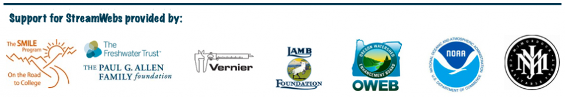

About¶
“StreamWebs is a dynamic networking platform that links students with locally based hands-on watershed stewardship projects and provides a multimedia showcase for their project and data reports. StreamWebs offers teachers and community partners resources to support setting students on the path to lifelong watershed stewardship. By providing students and teachers open-source, web-based tools for watershed data management, analysis, and networking, StreamWebs supports classrooms in their pursuit of STEM (Science, Technology, Engineering, Mathematics) educational opportunities, while helping students and teachers demonstrate their role as vital contributors to watershed sustainability. StreamWebs originated in 2008 as a project of The Freshwater Trust. In 2011, StreamWebs transitioned to Oregon State University Extension Service.”
Oregon State University’s Open Source Lab is currently remaking the site.
For more information, please visit the original StreamWebs site here, or send an email to StreamWebs@oregonstate.edu.
